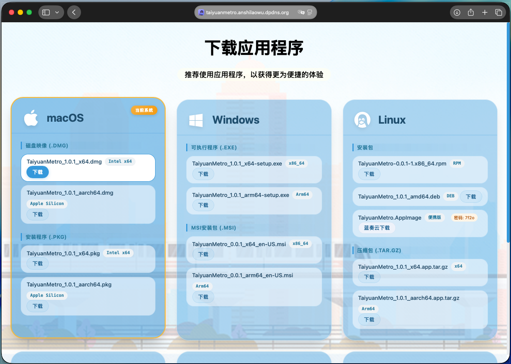
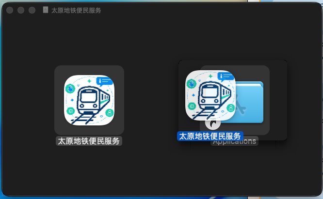
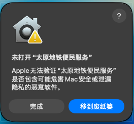
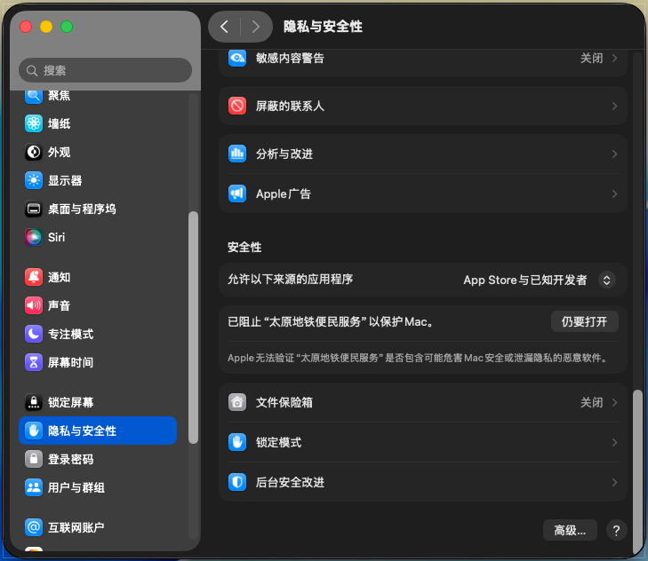
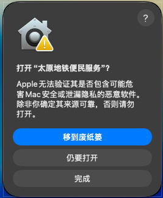
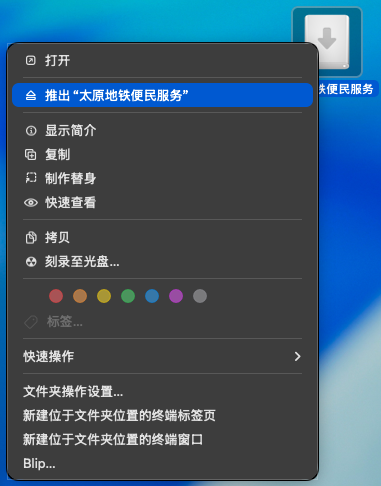
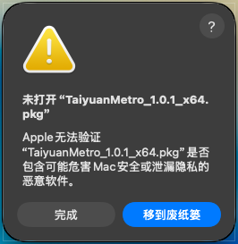
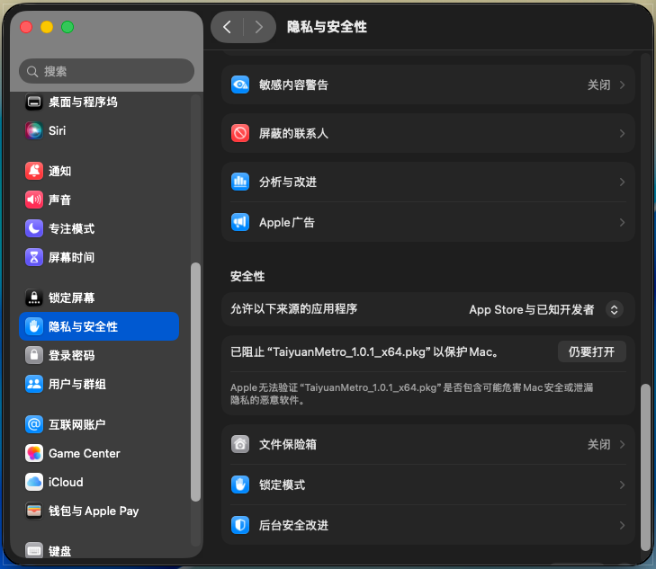
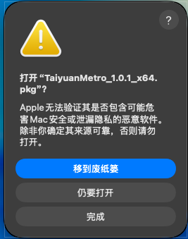
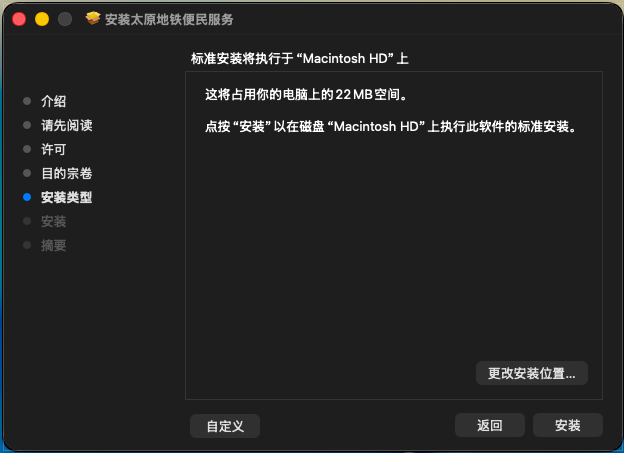

注：在macOS的应用程序中，需要按⌘+←或⌘+→键以前进/后退页面。

2. 在弹出的窗口中，将左侧的俺是老吴·太原地铁应用程序拖拽到“应用程序”文件夹中

3. 复制完成后，在启动台中点按俺是老吴·太原地铁应用程序以打开
4. 点按“完成”

5. 在系统设置-隐私与安全性中，点按“仍要打开”

6. 点按“仍要打开”并输入登录密码

7. 在桌面右击磁盘映像，点按“推出”

8. 即可正常使用
2. 点按“完成”

3. 在系统设置-隐私与安全性中，点按“仍要打开”

4. 点按“仍要打开”并输入登录密码

5. 按照安装程序的提示选择安装位置并输入登录密码以完成安装

6. 即可正常使用